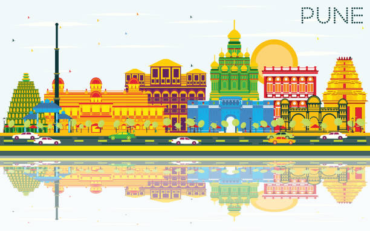
The second largest city in the state of Maharashtra and its cultural capital Pune is one of the most frequented tourist destinations in Maharashtra. A blend of rich history and modern updates, the city never fails to keep its tourists entertained. Nature has also been kind to the land as is evident from the picturesque landscapes here. Pune is also called the ‘Oxford of the East’ as it boasts of famous educational institutions. To relax or to be entertained, Pune is just where you need to be. Here are the top 10 places to visit in Pune.
1.Western Ghats
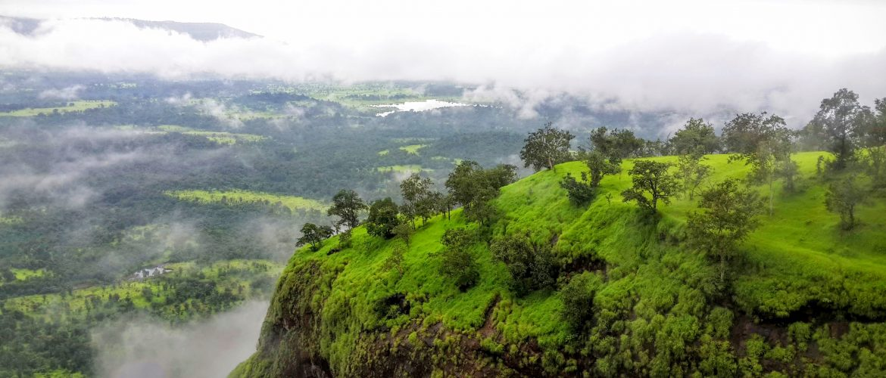
An absolute delight awaits nature lovers in this part of the world, which has been bestowed with ‘UNESCO World Heritage Site’ status. Misty mountains, dense forests, breathtaking valleys, wide range of flowers and almost everything that nature could give are here for view. You would be amazed to find countless number of waterfalls as you travel through the ghats. If you would like to enjoy the beauty of Western Ghats to the fullest, visit this place during monsoon. Adventurers can have a great time here as there is excellent scope for hiking, trekking and rock climbing.
More...
2.Shivneri Fort
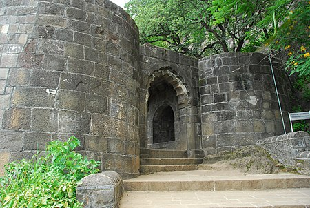
Shivneri Fort was the birthplace of Shivaji, the great Maratha emperor. It was here that he got his early training to get him ready for his future role as the undisputed king of the Maratha dynasty. The fort is situated on a hill that is 300 meter tall. One has to cross seven gates to reach the fort, which highlights how well the fort was guarded. Inside the fort, you will find a big lake named Badami Talav and besides it a statue of Shivaji along with his mother Jijabai. Once here, you could visit other forts nearby in Shivneri hill including Bhairavgad, Chavand Jeevdhan and Jumnar. If you love trekking and history, you are in for double delight.
More...
3.Aga Khan Palace
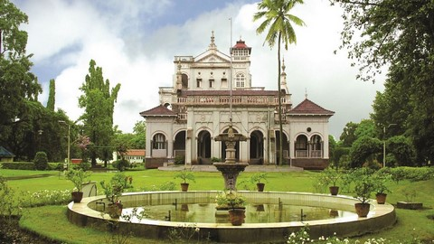
Contrary to its name, Aga Khan Palace functioned as a prison to Mahatma Gandhi, Kasturba Gandhi and Mahadev Bhai Desai, secretary of Gandhi between August 1942 and May 1944. Aga Khan Palace, though, had other purposes when Sultan Muhammed Shah Aga Khan III built it in the year 1892. It was built with a view to help those in neighborhood who suffered the worst effects of famine. Aga Khan the Fourth donated this palace to the people of the country as a mark of respect to Mahatma Gandhi. A fine specimen for architectural excellence with lush greenery around, the palace is frequented by tourists to visit Gandhi’s memorial and memorials of Kasturba and Gandhi’s secretary who breathed their last here.
More...
4.Parvati Hill Temple
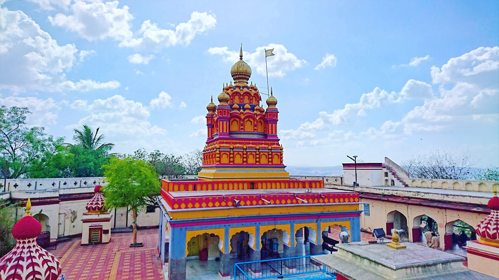
Parvati Hill, a famous landmark in the city, is home to ancient temples that date back to the 17th century. The four temples here are dedicated to Shiva, Vishnu, Ganesh and Kartikeya. At 2100 feet above sea level, the views from top of the hill are spectacular. Parvati Museum on the hill has a good collection of old manuscripts, swords, guns, coins and paintings. Portraits of rulers of Peshwa are seen in the museum.
More...
5.Rajgad Fort
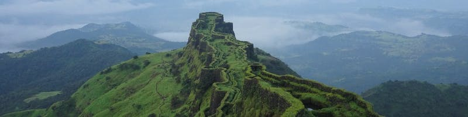
At a height of 4600 feet stands Rajgad fort, which served as Shivaji’s capital for more than 25 years. Trekking Rajgad can be a memorable experience as it is highly adventurous. The views from the top are stunning. To do justice to yourself and the fort after having trekked so high, it would be a better idea to camp here overnight so that you can thoroughly explore the fort the following morning. The fort houses two temples where camping facilities are provided. The fort had been a witness to many historical events and if you have a strong memory where history is concerned, the place should impress upon you most.
More...
6.Lal Mahal
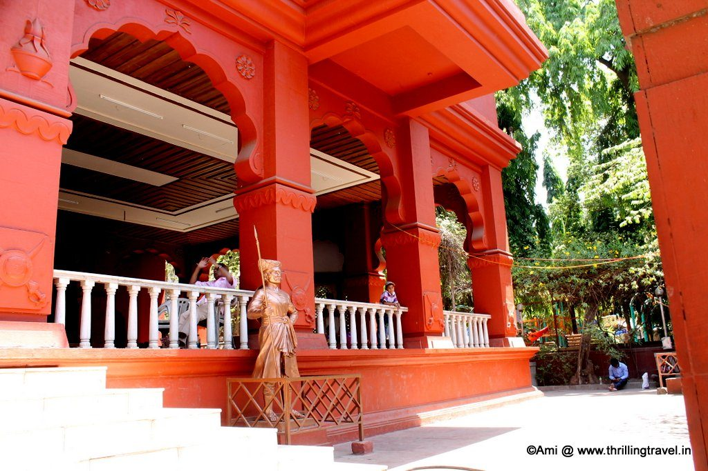
Located at the heart of the city, Lal Mahal, the red brick structure appeals to you the moment you set your eyes on it. The impressive palace was constructed in 1643 AD by Dadaji, father of emperor Shivaji, for his wife and son. This is where Shivaji lived until he won over the first fort. The place is a witness to the incident when Shivaji cut the fingers of Shaistekhan. The walls of the palace are decorated with paintings that depict some of the important events in the life of Shivaji.
More...
7.Raja Dinkar Kelkar Museum
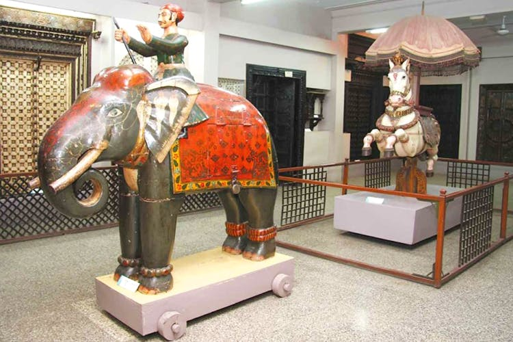
The Raja Dinkar Kelkar Museum reflects the spirit of the sole man behind the overwhelming number of collections of artworks from various parts of India. Dr. D.G. Kelkar, the man behind it, dedicated the museum to the memory of Raja, his only son, who had died tragically. This is the second largest museum in the country if you go by the numbers of museums that have been established and contributed to by individuals. The 21000 plus collections here represent various eras, races, cultures and traditions in the country. Musical instruments, wooden objects, writing materials, paintings, coins, textiles, arms, sculptures, ivory items and various other collections give you a glimpse into the past and at the same time you cannot but applaud the relentless efforts of the collector.
More...
8.The Empress Garden
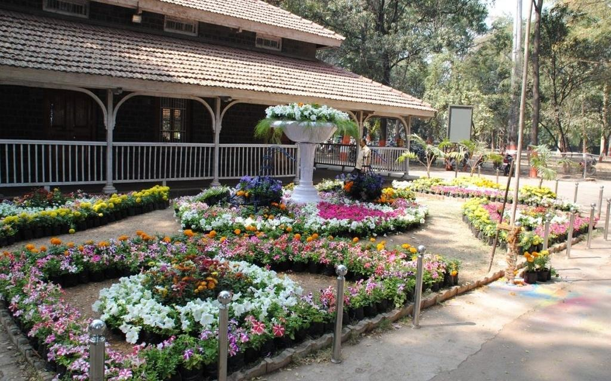
Monuments and other ancient constructions not only remind you of the mighty ancestors that belonged to your part of the world but they are also reminders of the downfall of the mighty and the supremacy of the victor who came from other land to fight, conquer and rule. The Empress Garden set in a sprawling 39 acre of land, though stunningly beautiful is a reminder of the rule of the British and their power, which was so overpowering that they named the garden after Queen Victoria when she was given the title ‘Empress of India’. The garden is frequented by tourists as the landscape is stunningly beautiful. Agri-Horticultural Society manages the garden with a view to preserve the region’s wide range of flowers. Many rare trees and flowers are seen here. Annual flower shows conducted here attract visitors from far off places. Jogging facility and play area for children are other added features of the park.
More...
9.Sinhgad Fort
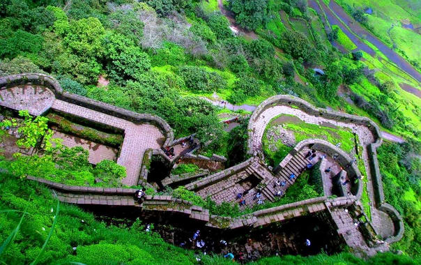
How would you love to view the earth from 4300 feet above sea level and particularly if you happened to be by a formidable fort? If the prospect is inviting, visit Sinhagad Fort on Sahyadri Hills from where you can have a stunning view of lush greenery, beautiful waterfalls and enjoy the tranquility. It was here in this fort where Rajaram, the younger son of Shivaji, passed away. The fort has a lot to narrate; however, you will be astounded by the captivating beauty of nature that you might for sometime leave history behind.
More...
10.Peshwa Udyan Zoo
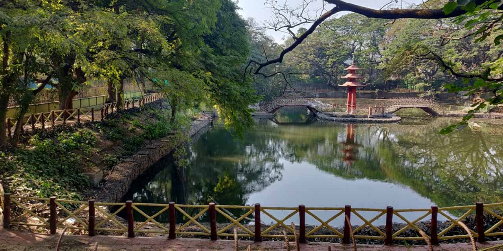
The greenery rich Peshwa Udyan Zoo is a perfect destination for the entire family. There are varieties of birds, animals and reptiles here. It is not just home to wildlife but it also has play area for children and temple inside the premises. The 17th century temple here is dedicated to god Ganesh. The scenic garden is mesmerizing. Toy train is yet another attraction here.Pune is a great place to visit on a holiday; only you need to plan ahead and spend more time here to explore the city, which has a lot to offer. I would be glad to hear the experience of others who have toured Pune. With more information, the next trip would definitely be more interesting and rewarding.
More...